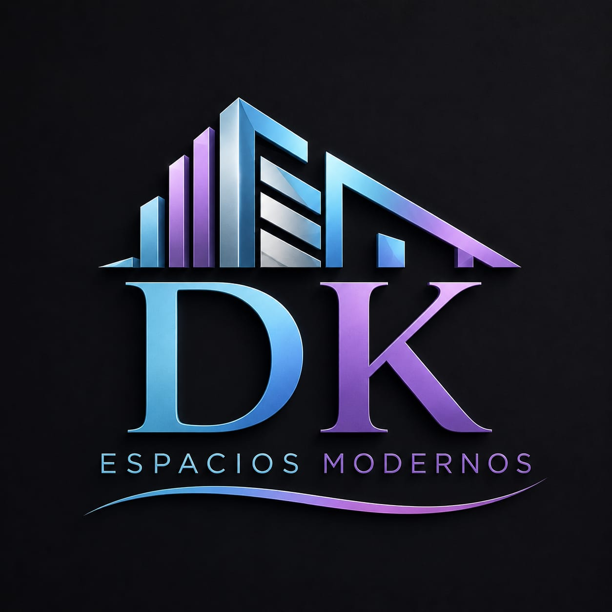

Soluciones en carpinteria y aluminio en Dosquebradas y el Eje Cafetero
Solicita tu cotizacionEn DK Espacios Modernos nos especializamos en la fabricacion e instalacion de carpinteria y aluminio arquitectonico, ofreciendo soluciones modernas y funcionales para hogares, oficinas y proyectos comerciales.
Fabricacion e instalacion de ventanas y puertas en aluminio arquitectonico de alta calidad.
Instalacion de divisiones modernas para banos y oficinas, optimizando espacios con estilo.
Diseno y montaje de cocinas integrales y closets personalizados para aprovechar cada espacio.
Soluciones en carpinteria adaptadas a tus necesidades, combinando funcionalidad y estetica.
Dependiendo de la magnitud del trabajo. Para proyectos pequenos y medianos, entre 3 y 15 dias.
Atendemos todo el Eje Cafetero, principalmente en Dosquebradas y Pereira.
Aluminio arquitectonico y maderas de alta calidad.
Si, todos nuestros proyectos cuentan con garantia de calidad.
Las ventanas modernas permiten mayor entrada de luz natural y ayudan a reducir el consumo energetico gracias a sus materiales aislantes.
Las divisiones en vidrio aportan amplitud y estilo, ideales para banos y oficinas donde se busca aprovechar mejor el espacio.
Un closet bien organizado maximiza el espacio disponible. Usa compartimentos, cajones y puertas corredizas para mayor funcionalidad.
Las cocinas integrales actuales combinan practicidad y estetica, con acabados modernos y distribuciones que facilitan el dia a dia.
El aluminio arquitectonico se mantiene en perfecto estado con limpieza regular usando agua y jabon neutro, evitando productos abrasivos.
La carpinteria moderna aporta lineas simples y funcionales que encajan perfectamente en espacios minimalistas, creando ambientes elegantes.
Quieres transformar tu espacio?
WhatsApp: 318 194 9943
Correo: dkespaciosmodernos@gmail.com
Atencion en: Dosquebradas, Pereira y todo el Eje Cafetero
Horario: Lunes a Sabado, 24 horas